Show the code
pseudo_log <- function(x, sigma=1, base=10) asinh(x/(2 * sigma))/log(base)
inv_pseudo_log <- function(x, sigma=1, base=10) 2 * sigma * sinh(x * log(base))2022-08-08
This side document illustrates how pseudo-log transformations can be used to transform skewed distributions towards normality.
The transformation \(f(x) = sinh^-1(x/2\sigma)/log(10)\) is a pseudo-logarithmic transformation mentioned by Johnson (1949). It has the following advantages over ordinary logarithmic transformations:
Of course, this comes at the cost of deviation from the logarithmic transformatio in terms of interpretability.
The parameter \(\sigma\) may be used to adapt the transformation to a specific range of an empirical distribution.
We define the pseudo-logarithmic transformation in R as:
pseudo_log <- function(x, sigma=1, base=10) asinh(x/(2 * sigma))/log(base)
inv_pseudo_log <- function(x, sigma=1, base=10) 2 * sigma * sinh(x * log(base))Next, we investigate how the parameter \(\sigma\) impacts the result of the transformation. We assume that \(x\) follows a log-normal distribution, and we will show results of \(f(x)\) with different choices of \(\sigma\). We center and scale \(f(x)\) before plotting.
p <- seq(0.001, 0.999, 0.001)
x <- exp(qnorm(p, mean=0, sd=1))
hist(x)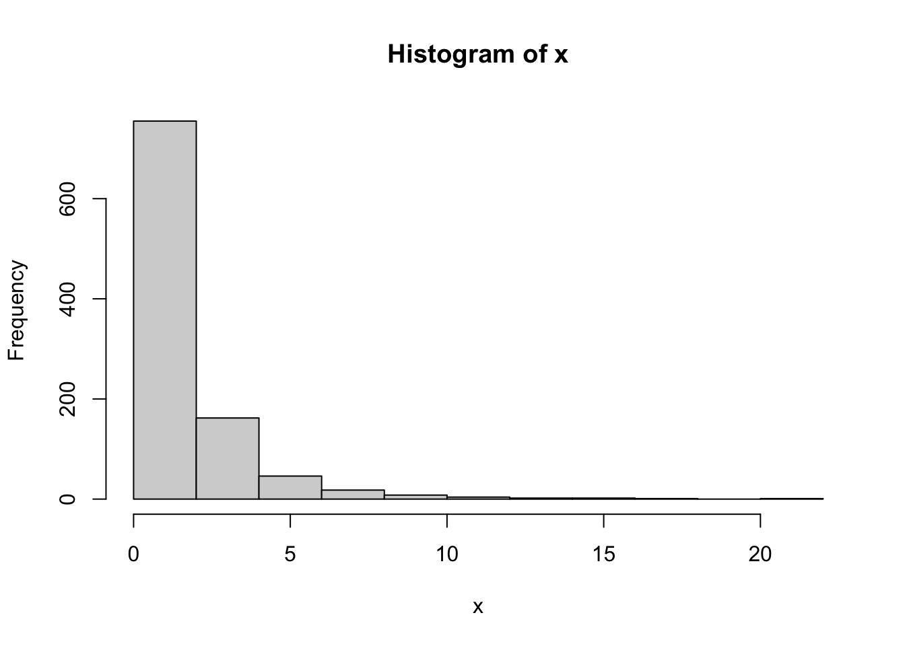
y <- cbind(log(x), scale(pseudo_log(x, 1)), scale(pseudo_log(x,0.5)), scale(pseudo_log(x, 2)), scale(pseudo_log(x, 0.05)))
plot(x, y[,2], type="l", ylab="f(x)", ylim=range(y))
lines(x, y[,1], col="red")
lines(x, y[,3], type="l", lty=2)
lines(x, y[,4], type="l", lty=3)
lines(x, y[,5], type="l", lty=4)
legend("topleft", lty=c(1,1,2,3,4), col=c("red","black","black","black","black"), legend=c("log", "sigma=1", "sigma=0.5", "sigma=2", "sigma=0.05"))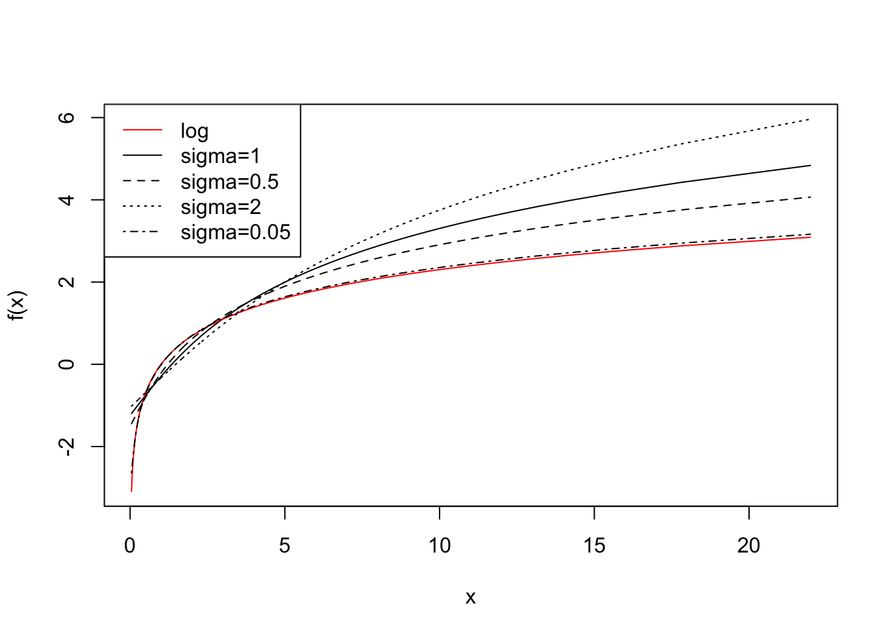
In the next code chunk, we multiply by 10 and repeat the exercise. We learn that the transformations become more similar and the choice of \(\sigma\) less relevant.
x <- x*10
y <- cbind(scale(log(x)), scale(pseudo_log(x, 1)), scale(pseudo_log(x,0.5)), scale(pseudo_log(x, 2)), scale(pseudo_log(x, 0.05)))
plot(x, y[,2], type="l", ylab="f(x)")
lines(x, y[,1], col="red")
lines(x, y[,3], type="l", lty=2)
lines(x, y[,4], type="l", lty=3)
lines(x, y[,5], type="l", lty=4)
legend("bottomright", lty=c(1,1,2,3,4), col=c("red","black","black","black","black"), legend=c("log", "sigma=1", "sigma=0.5", "sigma=2", "sigma=0.05"))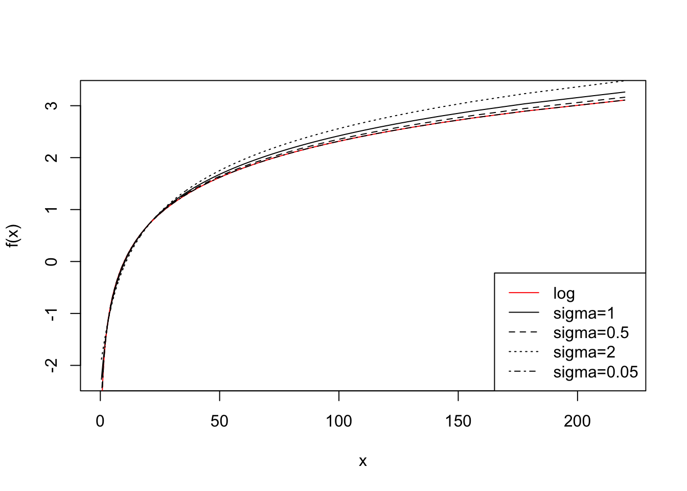
Finally, we apply the pseudo-logarithmic transformation to the original normal deviates. We learn that a higher value for the parameter \(\sigma\) makes the distribution ‘slimmer’ while a lower value makes it ‘fatter’, and it is even possible to induce bimodality with low values of sigma:
z <- qnorm(p, mean=0, sd=1)
hist(z)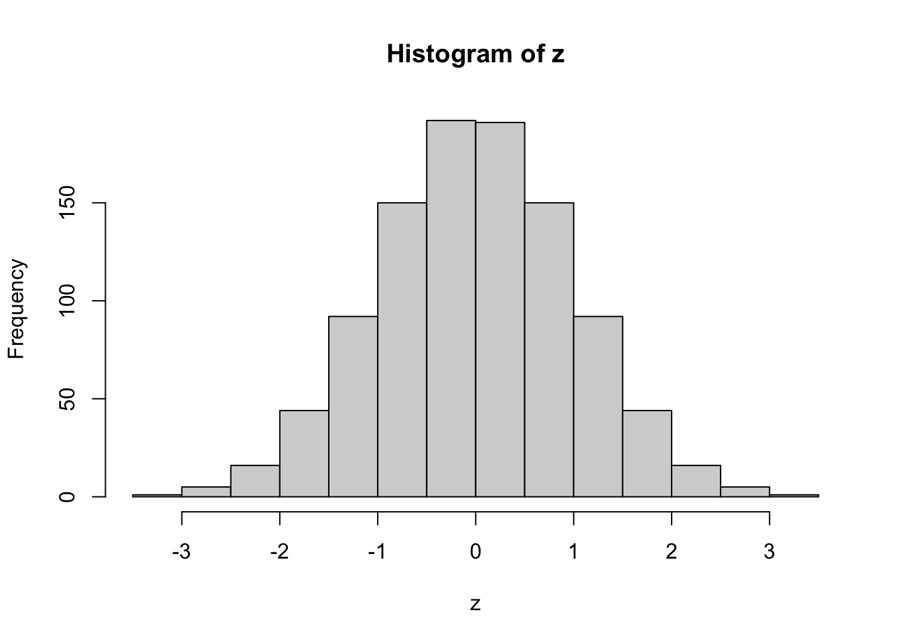
hist(pseudo_log(z, sigma=1))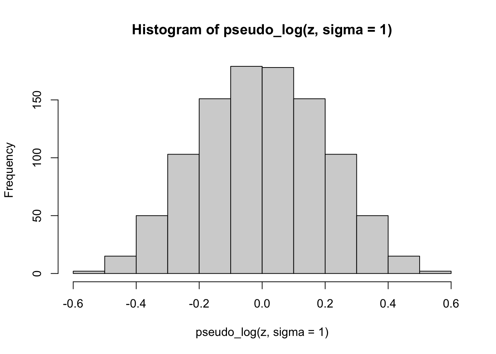
hist(pseudo_log(z, sigma=2))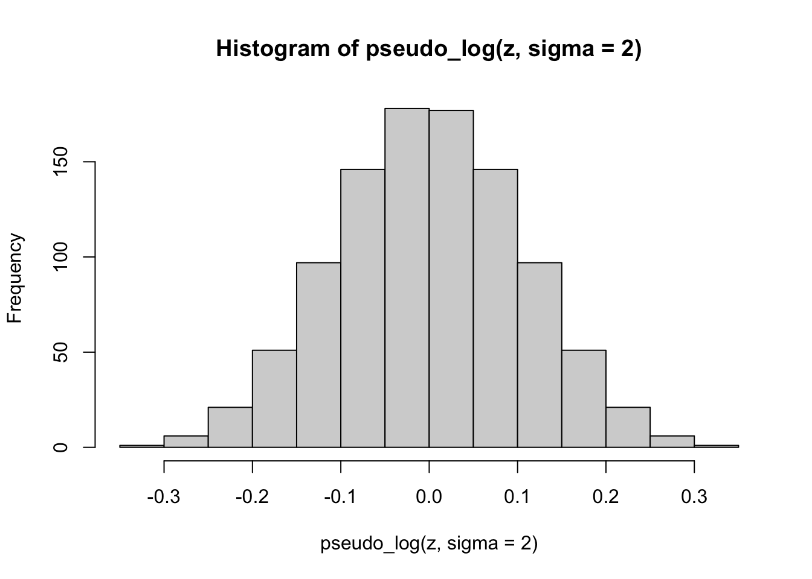
hist(pseudo_log(z, sigma=0.5))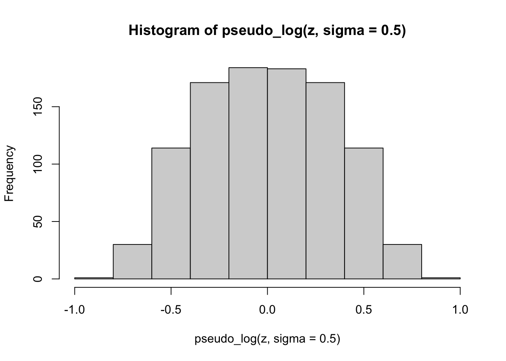
hist(pseudo_log(z, sigma=0.05))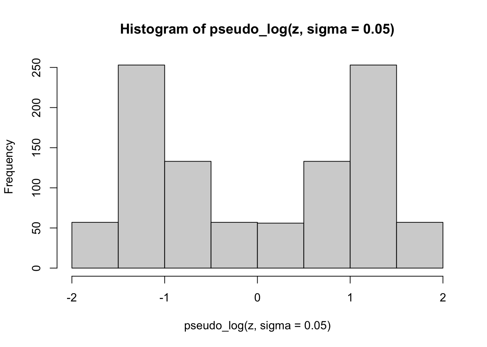
Any test statistic for testing normality could be chosen to find a suitable value of \(\sigma\) that induces normality into the transformed values. Here we use the (Pearson) correlation coefficient to compare the empirical distribution with normal deviates.
We simulate from a shifted log normal distribution and evaluate the value of \(\sigma\) that optimizes agreement with a normal distribution:
x<-sort(exp(rnorm(1000)+3))
hist(x)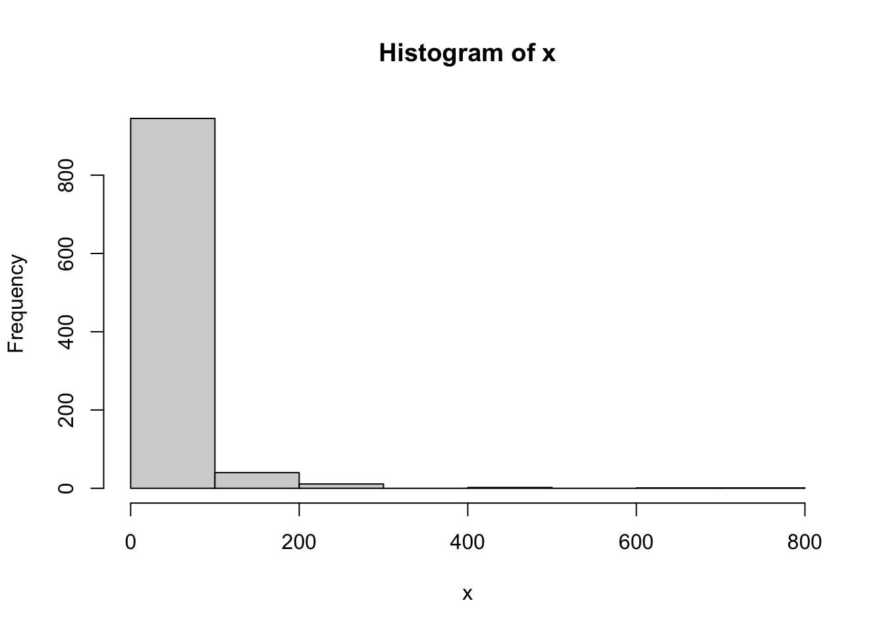
sigmas <- 2**seq(-10, 10, 1)
origcor <- cor(qnorm((1:length(x)-0.5)/length(x)), x)
ncorx <- sapply(sigmas, function(X) cor(qnorm((1:length(x)-0.5)/length(x)), pseudo_log(x,X)))
cat("Optimal sigma: ")Optimal sigma: (optsigma<-sigmas[ncorx==max(ncorx)])[1] 0.0009765625plot(log2(sigmas), ncorx, ylab="Correlation with normal deviates", ylim=c(0,1))
points(log2(sigmas)[ncorx==max(ncorx)], max(ncorx), pch=19)
abline(h=origcor)
legend("bottomright", lty=c(1, NA,NA), pch=c(NA,1,19), legend=c("Original", "Pseudo-log", "Pseudo-log with optimal sigma"))
box()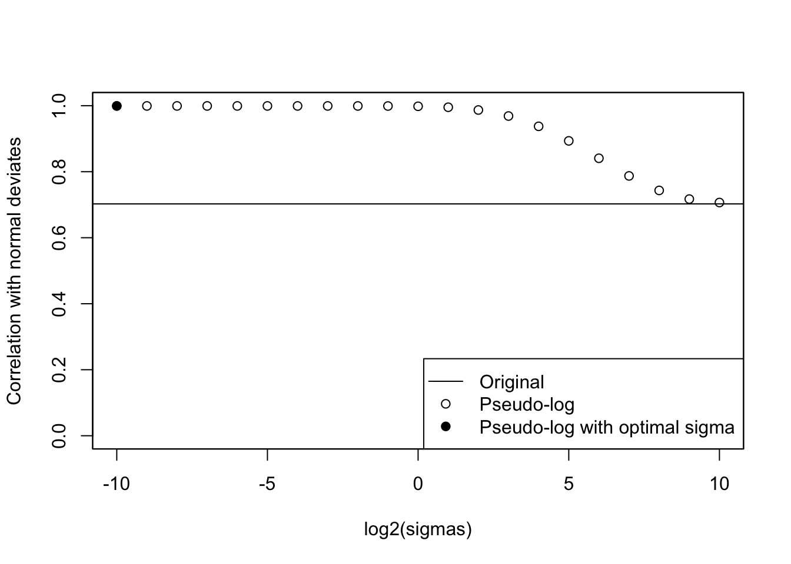
hist(pseudo_log(x, optsigma))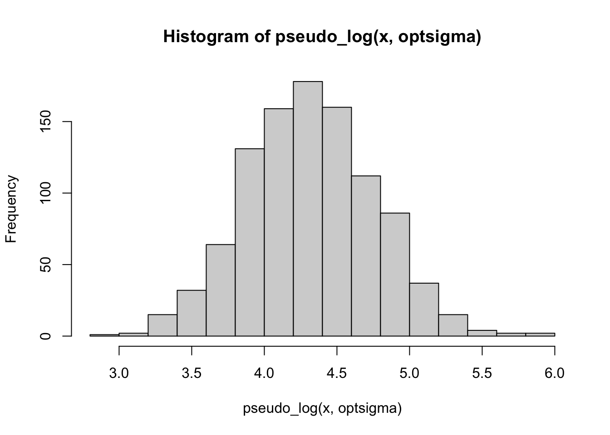
Also with an exponential distribution, the pseudo-logarithm may achieve a better agreement with a normal:
x<-sort(exp(rnorm(1000)+3))
hist(x)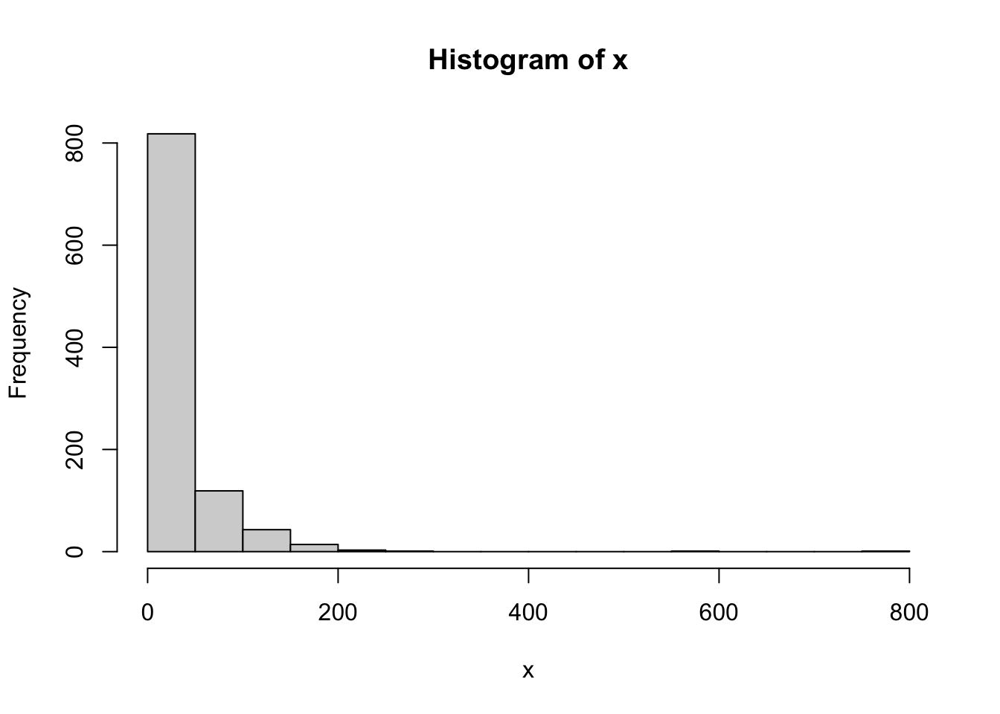
sigmas <- 2**seq(-10, 10, 1)
origcor <- cor(qnorm((1:length(x)-0.5)/length(x)), x)
ncorx <- sapply(sigmas, function(X) cor(qnorm((1:length(x)-0.5)/length(x)), pseudo_log(x,X)))
cat("Optimal sigma: ")Optimal sigma: (optsigma<-sigmas[ncorx==max(ncorx)])[1] 0.0009765625plot(log2(sigmas), ncorx, ylab="Correlation with normal deviates", ylim=c(0,1))
points(log2(sigmas)[ncorx==max(ncorx)], max(ncorx), pch=19)
abline(h=origcor)
legend("bottomright", lty=c(1, NA,NA), pch=c(NA,1,19), legend=c("Original", "Pseudo-log", "Pseudo-log with optimal sigma"))
box()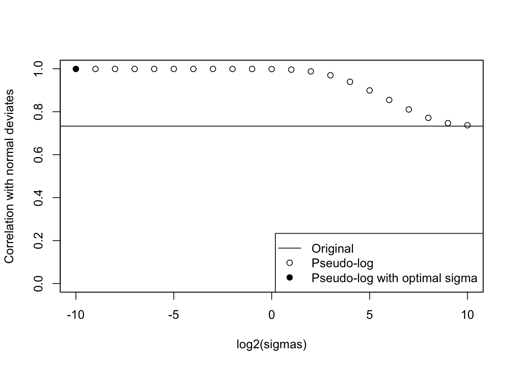
hist(pseudo_log(x, optsigma))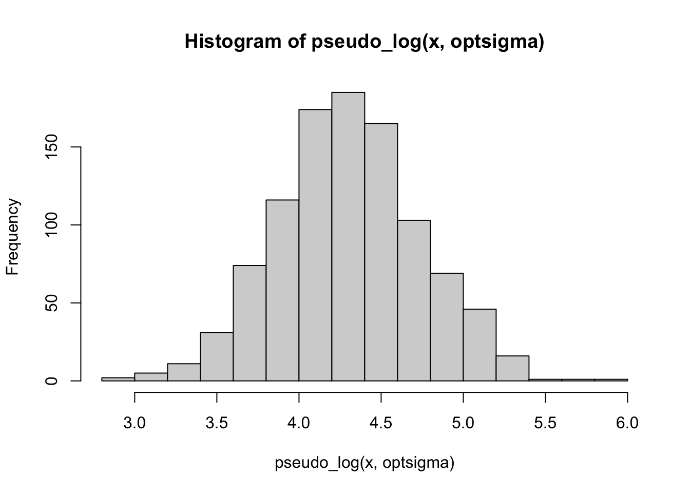
Now we mix a normal, lognormal and exponential distribution:
x1 <- scale(rnorm(1000))
x2 <- scale(rexp(1000))
x3 <- scale(exp(rnorm(1000)))
p1 <- rbinom(1000, 1, 0.33)
p2 <- rbinom(1000, 1, 0.5)
x<-p1*x1 + (1-p1)*(p2*x2+(1-p2)*x3)
x <- x-min(x)
x<-sort(x)
hist(x)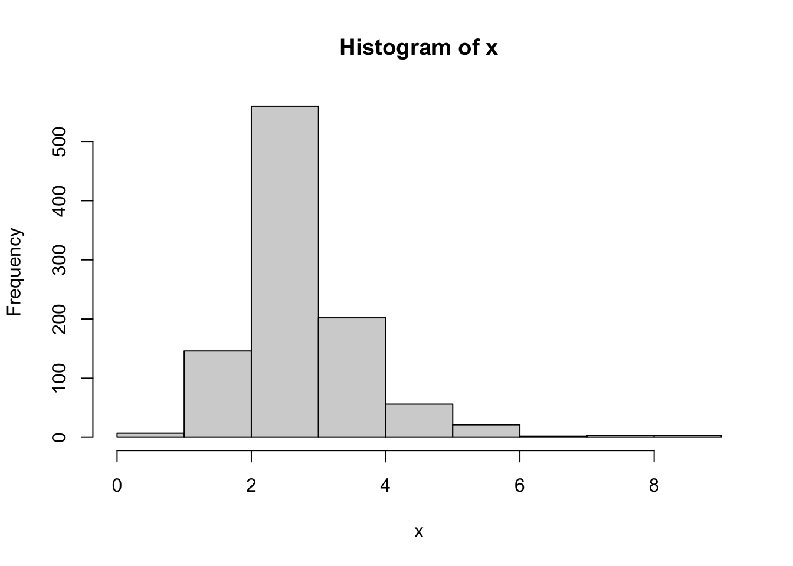
sigmas <- 2**seq(-10, 10, 1)
origcor <- cor(qnorm((1:length(x)-0.5)/length(x)), x)
ncorx <- sapply(sigmas, function(X) cor(qnorm((1:length(x)-0.5)/length(x)), pseudo_log(x,X)))
cat("Optimal sigma: ")Optimal sigma: (optsigma<-sigmas[ncorx==max(ncorx)])[1] 0.5plot(log2(sigmas), ncorx, ylab="Correlation with normal deviates", ylim=c(0,1))
points(log2(sigmas)[ncorx==max(ncorx)], max(ncorx), pch=19)
abline(h=origcor)
legend("bottomright", lty=c(1, NA,NA), pch=c(NA,1,19), legend=c("Original", "Pseudo-log", "Pseudo-log with optimal sigma"))
box()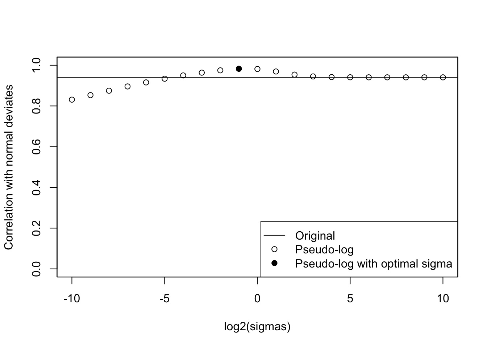
hist(pseudo_log(x, optsigma))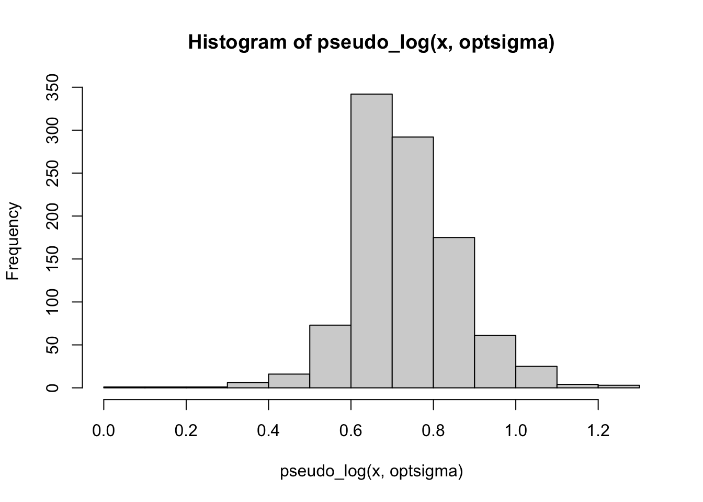
With simulated normal deviates, the pseudo-logarithm cannot improve the already perfect normality.
x<-sort(rnorm(1000))
hist(x)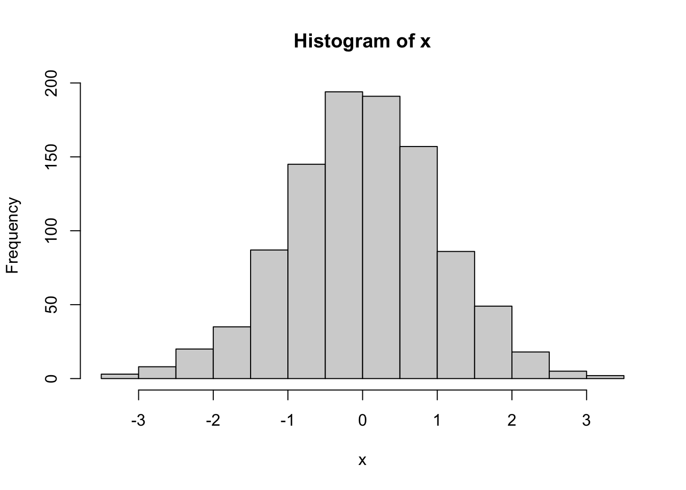
sigmas <- 2**seq(-10, 10, 1)
origcor <- cor(qnorm((1:length(x)-0.5)/length(x)), x)
ncorx <- sapply(sigmas, function(X) cor(qnorm((1:length(x)-0.5)/length(x)), pseudo_log(x,X)))
cat("Optimal sigma: ")Optimal sigma: (optsigma<-sigmas[ncorx==max(ncorx)])[1] 2plot(log2(sigmas), ncorx, ylab="Correlation with normal deviates", ylim=c(0,1))
points(log2(sigmas)[ncorx==max(ncorx)], max(ncorx), pch=19)
legend("bottomright", lty=c(1, NA,NA), pch=c(NA,1,19), legend=c("Original", "Pseudo-log", "Pseudo-log with optimal sigma"))
abline(h=origcor)
box()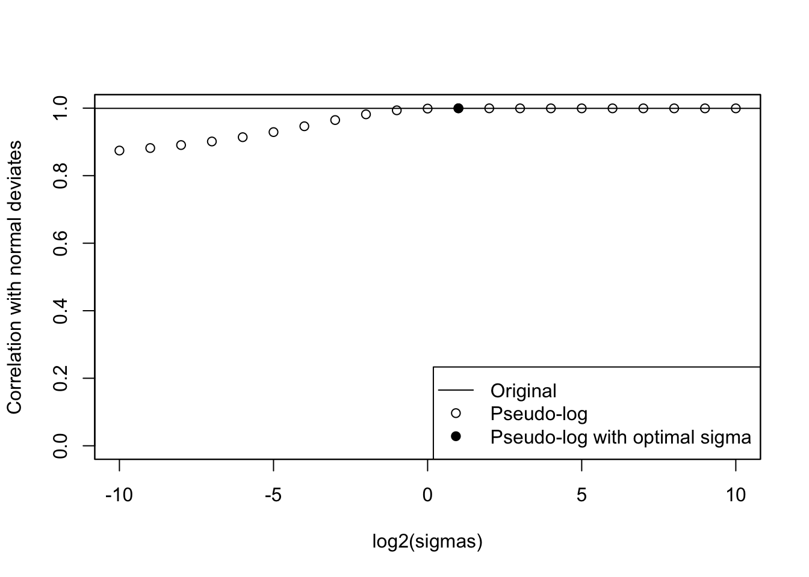
hist(pseudo_log(x, optsigma))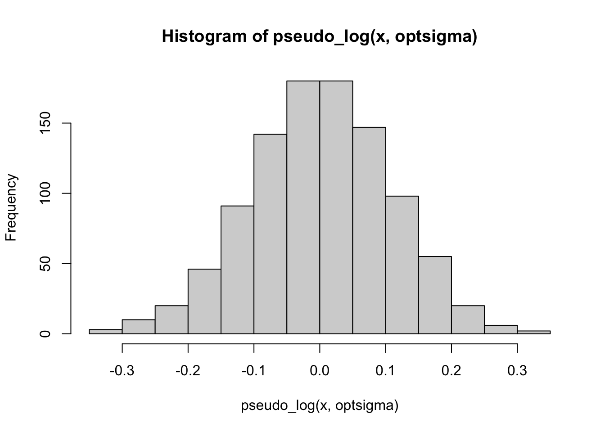
Johnson NL (1949). Systems of Frequency curves Generated by Methods of Translation. Biometrika 36, 149-176.